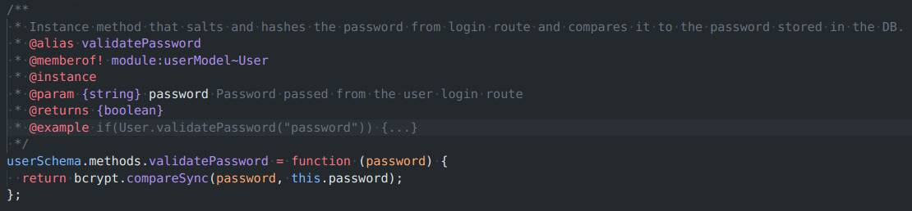
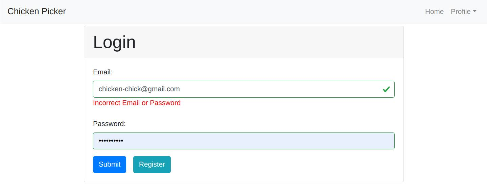
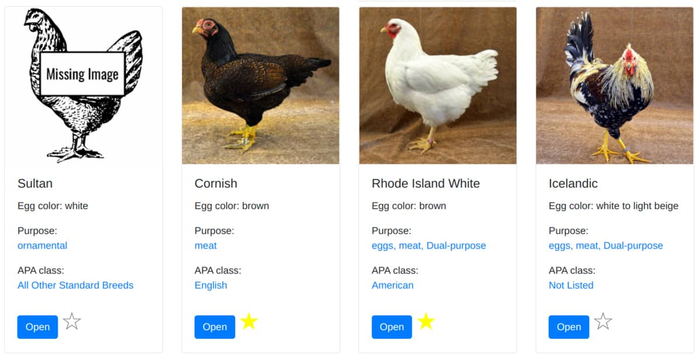

Chicken Picker is a single page, full-stack web application built using the MERN stack. The app is designed to help backyard chicken
enthusiasts choose the chicken breeds they want to raise in their flock. Users are able to create an account, update their profile
information, and view information about breed classification and purpose (ie. egg laying, meat, etc). Users are also able to create and
manage a list of favorite breeds.
Purpose and Context
Chicken Picker was a personal project built during my CareerFoundry Full-Stack Immersion course. This project helped expand and demonstrate
my skills in full-stack Javascript development.
Although the immersion course tasked me with creating a movie information database, I took the option of modifying the assignment to focus
on chicken breeds.
Having started my first backyard flock of egg laying chickens in spring 2020, I discovered that the backyard chicken community is in need of
a modern, comprehensive resource for selecting breeds for their flock. By choosing this topic, I was able to follow along with the course
but still create something unique, useful, and personal that I would enjoy working on after completing the course.
Check out a demo of the app here. Use the email demo@demo.com and
the password "demopassword" or register your own account.
The goal of this project was to gain a solid introduction to and practice using a variety of libraries and technologies used in MERN stack
development. The acronym MERN stands for MongoDB, Express.js, React, and Node.js which are the principal technologies used.
_ Approach
My server-side and client-side applications are designed to be self-standing and can be hosted independently from one another.
Server-side
The back-end for this project is a RESTful API that was built primarily using Express.JS and Node.js for the server, MongoDB for the
database, and Mongoose ODM to access the database. For user authentication and authorization I used Passport.js, bcrypt for salting and
hashing passwords, and JSON web tokens(JWT).
Though the API is principally about serving up data about chicken breeds, the actual chicken portion of the API is relatively simple. It
involves mainly reading from the database either all breeds, a few based on specific criteria, or a single breed by name.
The user portion, however, is much more complex because of security and privacy concerns. This involves validating user inputs with the
Express-validator library, salting and hashing the users password, passing a JWT and checking the JWT from the client, and much more.
Each user can also have a list of their favorite breeds which is modeled in the database as an array of breed ids that reference the breed
collection. This example of a many-to-many relationship was extremely simple to implement in the non-relational database without the need
for a join table and made MongoDB very easy to work with. The static methods, instance methods, and query helpers that Mongoose allowed me
to create on both the breed and user models added a lot of flexibility in working with the database.

The method on each User instance that compares hashed passwords for login.
I used Postman to test each route as I built or modified them and to assure that the JSON data, HTTP status codes, and error messages
returned from the API were correct. I also used JsDoc to document the app.
Client-side
The front-end of this app is built with React, Redux, Axios, Prop-types, and Parcel to create a single page, responsive application. I used
React-Bootstrap and SCSS for styling.
This was my first time working with React and any component based library for that matter but using the components and nesting felt
intuitive and natural. Using seed data at first and later using Axios to request data from the API, I was able to become familiar with
components and their basic lifecycle methods.
When building out forms for the login, registration, and profile update views I faced the challenge of creating useful user friendly
client-side validation. I was able to use a tutorial that used the HTML Constraint Validation API but had to heavily customize the code to
fit my needs. I considered making the form validation a reusable component that I could use for all my forms but in the end I decided that
the requirements for each form were unique enough that it was quicker and less prone to bugs if I recreated it for each form. I did,
however, create a reusable component used on each form input to display error messages to the user.

The login screen with validation error displayed.
Since I was building a single page application, I used the React-Router-Dom library to define the routes and views I wanted to be accessible
via url in the browser. I added logic in the router to prevent unauthenticated users from viewing pages they should not have access to.
For managing the app’s state I used Redux. I believe that Redux was probably a little overkill for a project this size, but I was interested
in learning how to work with it since it had a reputation of being a little complex. I found it much less daunting than I had anticipated.
Redux is a library that allows an app to have a global state, that is data that is accessible to any part of the app that needs it.
I did not begin using Redux until after the bulk of my app was already built out so I was able to appreciate it because it allowed me to
remove some clutter from my code making it much cleaner and more readable. This is especially true with my favorites list functionality.
Before Redux I struggled to find a way to make the favorites toggle work without “prop drilling”. Prop drilling is where a piece of data is
passed through several nested components until it reaches the component that needs it. Redux allowed the required data to be freely
available to my favorites toggle component without all the prop-drilling which made the code easier to work with and it should be more
maintainable.

The breed cards that are used on several pages.
Another way in which I was challenged was due to the nature of the data I used for my API. A common way of referring to a chicken breed that
is good for both their eggs and their meat is to call them “dual-purpose” breeds. I wanted a user to be able to view breeds used primarily
for eggs, for instance, and have all of the dual-purpose breeds show up as well. I also wanted users to be able to view just dual-purpose
breeds. This required a little bit of tricky logic to make it work the way I wanted it to and I think it still requires a little more
thought.
_ Future Development
I want to refactor the approach I took to ensure that a user is unique. In the current version, I have restricted users from changing
their email address, but I want to do a little more research on best practices and handle this differently in the future.
Since the app has user profile functionality and the user can add their email address I would like to add an email verification system.
I would like to crowd-source the data and collect more information about the breeds. Users should be able to update or submit a new breed.
I would like edits to be held for review before being published.
Open up the content for viewing without requiring login and add rate limiting to protect the API. Login would be required for creating
favorites and submitting/modifying breeds.
I would like to add filters to allow users to view chickens by egg color and egg quantity.
Improve UI/UX of the app. I would like to work with a designer to help implement a more cohesive and appealing user experience that would
help bring the app out of the realm of the learning and hobby project to being a useful real world app.
_ Final Thoughts
I really enjoyed working with React and found the flexibility of the component structure fun and challenging to work with. I also enjoyed
the puzzle involved with trying to hold nested components, their props, and functionality in my mind. I think this app turned out really
well and I am happy with the functionality and had fun seeing all of the pieces come to life. The project gave me a solid foundation with
React and advanced my understanding of JavaScript.